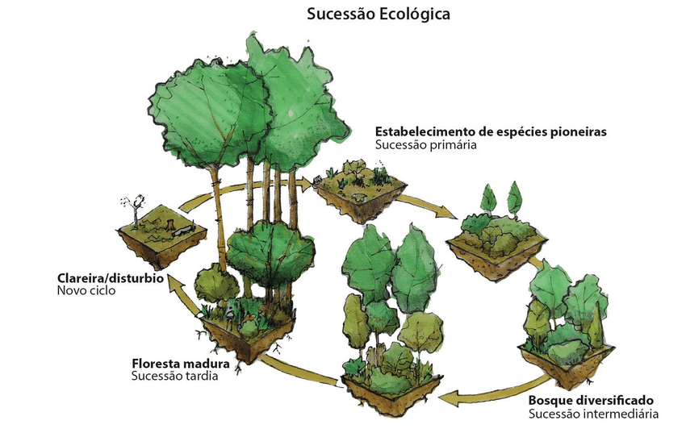

A sucessão ecológica diz respeito às mudanças graduais e progressivas que ocorrem em um ecossistema até que ele atinja uma comunidade com o máximo de desenvolvimento possível. E para seu melhor entendimento, ela pode ser dividida em três etapas, cada um com suas características e espécies predominantes:
Sucessão Ecológica


Ecese - representa a comunidade pioneira. São os primeiros organismos a se instalarem no ambiente, como líquens, gramíneas e insetos. Formas de vida mais simples que requerem poucos recursos ou um desenvolvimento ambiental menos complexo.
Seral - Comunidade ambiental intermediária. Representada pela vegetação de pequeno porte, arbustiva e herbácea. Nessa fase ocorrem mudanças significativas no ambiente, como o aumento de animais de pequeno porte e um ciclo ecológico mais complexo.
Clímax - É o último estágio alcançado ao longo da sucessão ecológica. Este estágio é caracterizado por compreender espécies que são as melhores competidoras na comunidade local. Nesse estágio o ambiente é formado por animais maiores e plantas perenes que estabelecem ciclos e um ambiente mais estável para as formas de vida alí presentes. Nesse estágio as espécies são as melhores em seus respectivos papéis e são fundamentalmente dependentes umas das outras.
Ao fim da sucessão ecológica a comunidade ecológica apresentará total sustentabilidade e eficiência em distribuição de nutrientes e recursos, as espécies que competirão alí serão as mais adaptadas de acordo com a teoria da evolução. Porém, o processo de sucessão ecológica pode ser interrompido por ações externas, tanto naturais como meteoros ou incêndios, tanto artificiais como o desmatamento ou a poluição.